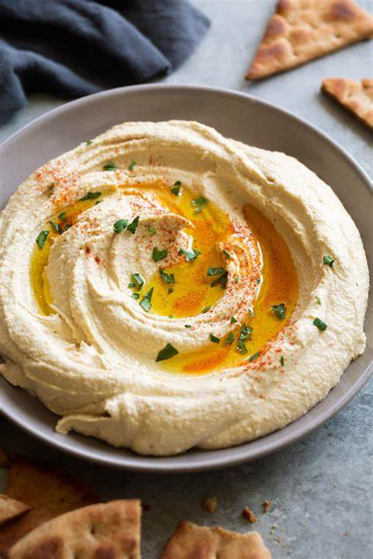
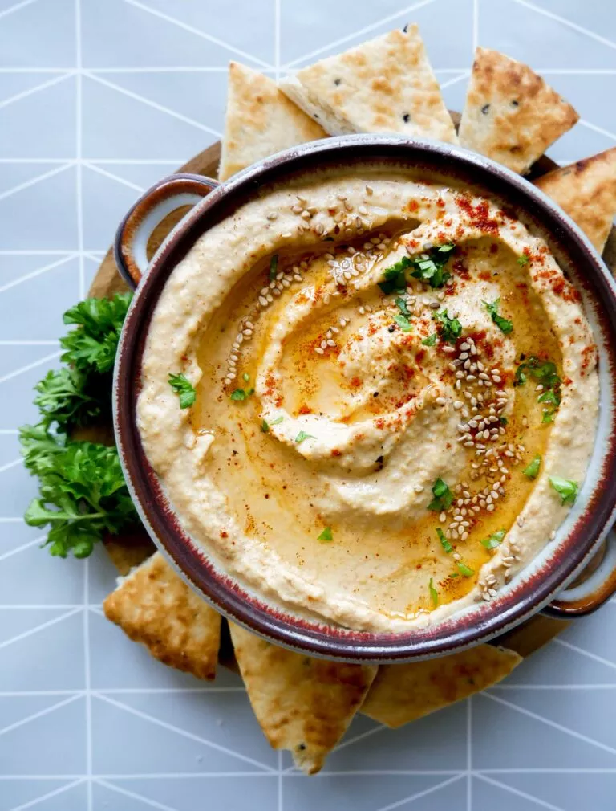

Esta receita faz Hummus rápido e saboroso, sem mexer. Foi adaptado de várias receitas diferentes que li ao longo dos anos.
Hummus é uma deliciosa pasta grossa usada fortemente em pratos gregos e do Oriente Médio. É muito saboroso com salada, carnes grelhadas e pães pitta.
 Ingredientes:
Intruções:
Armazenamento:
Leve à geladeira o hummus processado em um recipiente fechado. Você poderá usá-lo por cerca de uma semana depois de fazer isso. Se começar a ficar borbulhante, você definitivamente deve descartá-lo.
Hummus é adequado para congelamento; você pode descongelá-lo e usá-lo dentro de alguns meses.